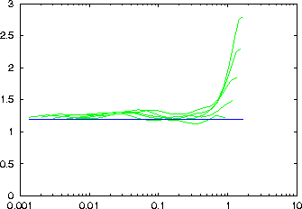

Computes curves for the fixed mass computation of the information dimension. The output is written to a file named file_c1, containing as two columns the necessary radius and the `mass'. Although the `mass' is the independent quantity here, this is to conform with the output of c2naive and d2.
-d delay
-m minimal embedding dimension
-M maximal embedding dimension (at least 2)
-t minimal time separation
-n minimal number of center points
-# resolution, values per octave (2)
-K maximal number of neighbours (100)
-l number of values to be read (all)
-x number of values to be skipped (0)
-c column(s) to be read (1 or file,#)
-o output file name, just -o means file_c1
-V verbosity level (0 = only fatal errors)
-h show this message
A logarithmic range of masses between 1/N and 1 is realised by varying the neighbour order k as well as the subsequence length n. For a given mass k/n, n is chosen as small is possible as long as k is not smaller than the value specified by -K .
The number of reference points has to be selected by specifying -n . That number of points are selected at random from all time indices.
It is possible to use multivariate data, also with mixed embeddings. Contrary to the convention, the embedding dimension here specifies the total number of phase space coordinates. The number of components of the time series to be considered can only be given by explicit enumeration with the option -c .
Note: You will probably use the auxiliary programs c2d or c2t to process the output further. The formula used for the Gaussian kernel correlation sum does not apply to the information dimension. See also the example below.
> henon -l10000 > data > c1 -m2 -M6 -d1 -t50 -n500 data gnuplot> set logscale x gnuplot> set yrange [0:3] gnuplot> plot '< c2d -a2 data_c1', 1.2
